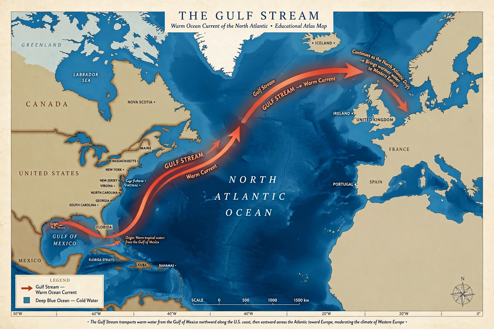

Wikipedia — the free encyclopedia
| Type | Warm ocean current |
| Location | North Atlantic Ocean |
| Source | Gulf of Mexico / Florida Straits |
| Direction | Northeast, along the North American coast, then across the Atlantic |

The Gulf Stream is a powerful, warm ocean current that originates in the Gulf of Mexico, exits through the Straits of Florida, and follows the eastern coast of the United States before turning east across the North Atlantic. It is one of the strongest ocean currents in the world and a major component of the North Atlantic subtropical gyre.
Off the coast of North America the current can be roughly 100 kilometres wide and moves surface water at speeds that can exceed 2 metres per second near Florida. East of Cape Hatteras it begins to meander, shedding warm- and cold-core rings, and its continuation towards Europe is known as the North Atlantic Drift.
By transporting warm tropical water to high latitudes, the Gulf Stream moderates the climate of northwestern Europe, which is markedly milder than other regions at similar latitudes. It also influences weather along the American east coast and the paths of tropical cyclones, which draw energy from its warm surface waters.
The current forms part of the Atlantic Meridional Overturning Circulation (AMOC). Measurements and modelling studies have examined whether this circulation is slowing under climate change, a question of continuing scientific debate.
The current was described by Juan Ponce de León's expedition in 1513, whose ships were carried north despite sailing south. In the 1770s Benjamin Franklin, working with the Nantucket whaler Timothy Folger, produced one of the first charts of the Gulf Stream, noting that ships sailing with it between America and England made the passage considerably faster.